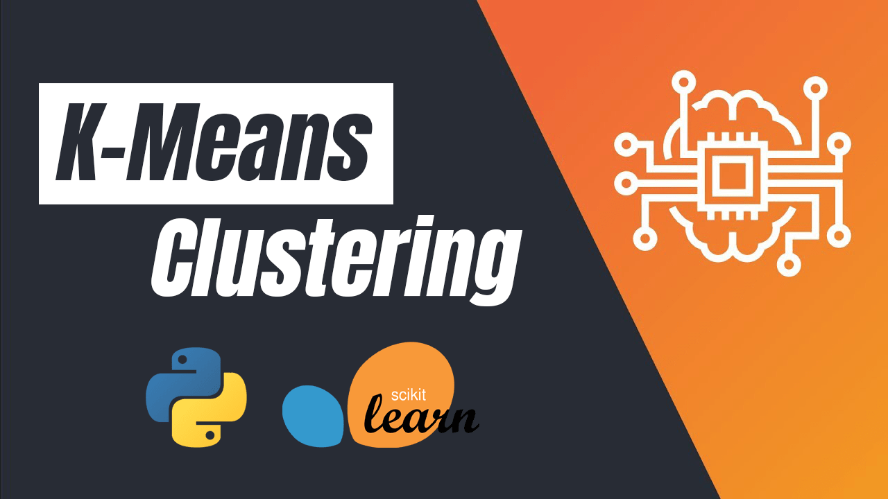
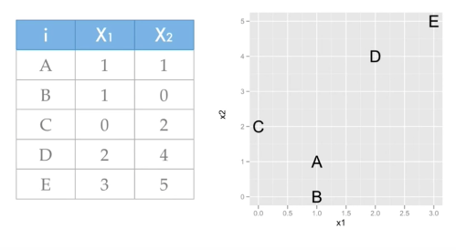
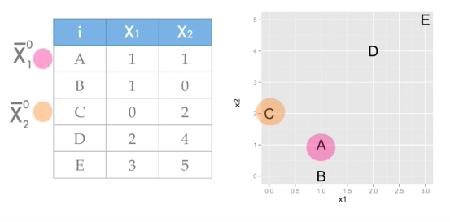
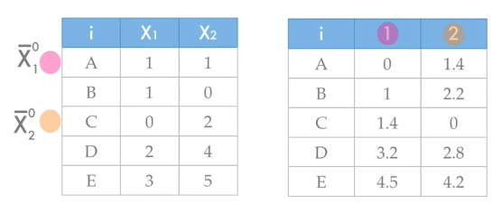
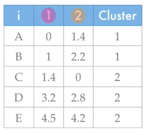
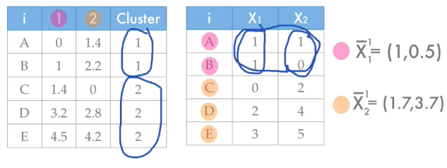
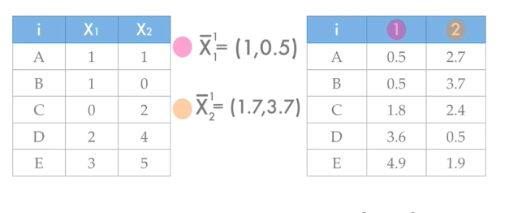
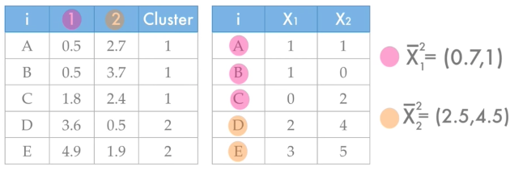
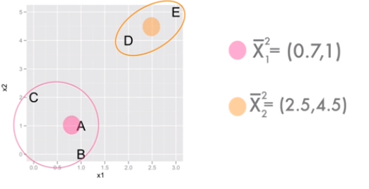

K-Means Clustering
Pengertian K-Means Clustering¶

Clustering merupakan suatu metode untuk mencari dan mengelompokkan data yang memiliki kemiripan karakteristik (similarity) antara satu data dengan data yang lain. Clustering merupakan salah satu metode data mining yang bersifat tanpa arahan (unsupervised). Yang dimaksud metode unsupervised yaitu metode ini diterapkan tanpa adanya latihan (training) dan guru (teacher) serta tidak memerlukan target output. Ada dua jenis data clustering yang sering dipergunakan dalam proses pengelompokan data yaitu hierarchical (hirarki) data clustering dan non-hierarchical (non hirarki) data clustering.
K-Means merupakan salah satu metode data clustering non hirarki yang berusaha mempartisi data yang ada ke dalam bentuk satu atau lebih cluster/kelompok. Metode ini mempartisi data ke dalam cluster/kelompok sehingga data yang memiliki karakteristik yang sama dikelompokkan ke dalam satu cluster yang sama dan data yang mempunyai karakteristik yang berbeda dikelompokkan ke dalam kelompok yang lain. Adapun tujuan dari data clustering ini adalah untuk meminimalisasikan objective function yang diset dalam proses clustering, yang pada umumnya berusaha meminimalisasikan variasi di dalam suatu cluster dan memaksimalisasikan variasi antar cluster.
Kelebihan dan Kekurangan K-Means Clustering¶
Kelebihan K-Means Clustering¶
- Menggunakan prinsip yang sederhana, dapat dijelaskan dalam non-statistik
- Mudah untuk diimplementasikan dan dijalankan.
- Waktu yang dibutuhkan untuk menjalankan nya relatif cepat
- Sangat fleksibel, dapat dengan mudah diadaptasi.
- Sangat umum digunakan
Kekurangan K-Means Clustering¶
- dalam non-statistik Karena menggunakan k buah acak, tidak di jamin untuk menemukan kumpulan cluster yang optimal
- dapat terjadinya curse of dimensionality, apabila jarak antara cluster yang satu dengan yang lain memiliki banyak dimesi.
- Tidak optimal digunakan untuk data yang jumlahnya terlalu banyak sampai bermiliyar.
Algoritma K-Means Clustering¶
Langkah-langkah algortima K-Means Clustering :¶
- Tentukan jumlah cluster(kelompok) yang kita inginkan.
- Inisiasi centroid untuk setiap cluster secara acak. Centroid adalah data yang merepresentasikan suatu kelompok.
- Hitung kedekatan suatu data terhadap centroid, kemudian masukkan data tersebut ke cluster yang centroid-nya memiliki sifat terdekat dengan dirinya(yang nilainya paling kecil).
- Pilih kembali centroid untuk masing-masing cluster ,yaitu mean (rata-rata) nilai data dari setiap cluster yang sama .
- Ulangi langkah ke-3 sampai tidak ada perubahan anggota untuk semua cluster, atau sampai batas yang ditentukan dari perulangan anggota yang sama.
Contoh Perhitungan K-Means Sederhana¶

Perhatikan gambar diatas, ada tabel yang mempunyai column X1 dan X2, dimana tabel tersebut akan kita pakai untuk mempelajari k-means clustering. Pertama-tama kita akan menentukan jumlah cluster (kelompok) yakni kita tentukan k = 2. tahap selanjutnya adalah inisiasi centroid karena k = 2 , maka kita akan memilih 2 observasi secara acak dari tabel, yakni A dan C.

setelah itu kita akan menghitung jarak antar data dengan centroid yang telah ditentukan, dengan menggunakan formula euclidean distance. $$ \begin{aligned} d(p, q)=d(q, p) &=\sqrt{\left(q_{1}-p_{1}\right){2}+\left(q_{2}-p_{2}\right){2}+\cdots+\left(q_{n}-p_{n}\right)^{2}} \ &=\sqrt{\sum_{i=1}{n}\left(q_{1}-p_{i}\right){2}} \end{aligned} $$ Maka pertama-tama kita akan menghitung observasi A dengan centroid 1 :
=√(1-1)^2 + (1-1)^2
=√(0)^2 + (0)^2
=√0
=0
Setelah itu menghitung observasi A dengan centroid 2:
=√(1-0)^2 + (1-2)^2
=√(1)^2 + (1)^2
=√2
=1,4

Lakukan perhitungan sampai semua observasi dihitung.

Hitung kedekatan suatu data terhadap centroid, kemudian masukkan data tersebut ke cluster yang centroid-nya memiliki sifat terdekat dengan dirinya (yang nilainya paling kecil). Pada observasi A yang paling kecil nilainya adalah 0 maka masuk ke dalam cluster 1.

Pilih kembali centroid untuk masing-masing cluster ,yaitu mean (rata-rata) nilai data dari setiap cluster yang sama . observasi A dan B dalam cluster yang sama yakni cluster 1, maka dihitung untuk centroid 1 = (1+1 / 2 , 1+ 0 /2 ) -> (1,0.5). dan centroid 2 = (1.7,3.7).

Lakukan penghitungan lagi dengan centroid yang baru.

Pilih kembali centroid untuk masing-masing cluster ,yaitu mean (rata-rata) nilai data dari setiap cluster yang sama. Ulangi sampai tidak ada perubahan anggota untuk semua cluster, atau sampai batas yang ditentukan dari perulangan anggota yang sama.

Software Requirements¶
- Python 3.0 atau versi yang lebih baru, disini saya menggunakan python 3.7
- IDE Pycharm
Library Python yang digunakan:¶
- Numpy
Numpy merupakan sebuah library pada Python yang berfungsi untuk melakukan operasi vektor dan matriks dengan mengolah array dan array multidimensi. Biasanya NumPy digunakan untuk kebutuhan dalam menganalisis data.
instal numpy:
pip install numpy- Pandas
pandas adalah sebuah librari berlisensi BSD dan open source yang menyediakan struktur data dan analisis data yang mudah digunakan dan berkinerja tinggi untuk bahasa pemrograman Python.
instal pandas:
pip install pandas- Matplotlib
Matplotlib adalah library paling banyak digunakan oleh data science untuk menyajikan datanya ke dalam visual yang lebih baik.
instal matplotlib:
pip install matplotlib- Scikit Learn
Machine learning ada yang berbasis statistika ada juga yang tidak. Salah satunya adalah support vector machine dan regresi linier. Mungkin bagi sebagian orang sudah biasa menulis sendiri library untuk implementasi kedua algoritma tadi. Tapi untuk membuatnya dalam waktu singkat tentu butuh waktu yang tidak sedikit pula.
Scikit-Learn memberikan sejumlah fitur untuk keperluan data science seperti:
- Algoritma Regresi
- Algoritma Naive Bayes
- Algoritma Clustering
- Algoritma Decision Tree
- Parameter Tuning
- Data Preprocessing Tool
- Export / Import Model
- Machine learning pipeline dan lainnya
instal Scikit Learn :
pip install scikit-learnImplementasi K-Means Clustering¶
Import Library yang dibutuhkan¶
Mengimportkan library untuk mendukung implementasi k means clustering
import pandas as pd
import numpy as np
import matplotlib.pyplot as plt
from sklearn.preprocessing import StandardScaler
from sklearn.cluster import KMeansMemuat Dataset¶
Mengimport dataset yang digunakan untuk pengimplemtasian k means clustering
dataset bisa didownload disini
dataset=pd.read_csv("../data.csv",encoding = "ISO-8859-1")
dataset.shapeData Preprocessing¶
Menghilangkan duplikat entri pada dataset.
print (dataset.duplicated().sum())
dataset.drop_duplicates(inplace = True)
dataset.shapeMenghilangkan missing value di kolom customer id.
dataset.dropna(axis = 0, subset =['CustomerID'], inplace = True)
dataset.shapemengecek data apakah ada yg null. jika tidak ada yang null bisa di comment (#)
print (pd.DataFrame(dataset.isnull().sum()))menghilangkan order yang dicancel.
dataset = dataset[(dataset.InvoiceNo).apply(lambda x:( 'C' not in x))]
dataset.shape
# print(dataset.shape)
df_customerid_groups=dataset.groupby("CustomerID")Membuat dataframe baru dan memilihnya¶
Membuat dataframe baru 'Quantity', 'UnitPrice', 'CustomerID'.
df_cluster=pd.DataFrame(columns=['Quantity','UnitPrice','CustomerID'])
count=0
for k,v in (df_customerid_groups):
df_cluster.loc[count] = [(v['Quantity'].sum()), v['UnitPrice'].sum(), k]
count+=1
df_cluster.shapedisini kita hanya memakai kolom 'Quantity', 'UnitPrice' untuk di kelompokan
X = df_cluster.iloc[:, [0, 1]].values #mengambil dataMenggunakan Elbow method untuk mencari jumlah cluster¶
Menggunakan elbow method untuk mencari jumlah cluster yang ideal kemudian diplot
for i in range(1,11): #
kmeans = KMeans(n_clusters = i, init ='k-means++',max_iter=300,n_init=10)
kmeans.fit(X)
wcss.append(kmeans.inertia_)
plt.plot(range(1,11) , wcss)
plt.title('The Elbow Method')
plt.xlabel('Jumlah Kelompok Customer (kelompok jenis customer)')
plt.ylabel('With in cluster sum of squers(WCSS)')
plt.show()| Keterangan | |
|---|---|
| init | Metode inisialisasi, default ke ‘k-means ++’: |
| n_cluster | Jumlah cluster serta jumlah centroid yang dihasilkan |
| k-mean++ | metode inisialisasi acak untuk centroid |
| max_iter | Jumlah maksimum iterasi dari algoritma k-means untuk sekali jalan |
| n_init | Jumlah waktu algoritma k-means akan dijalankan dengan centroid yang berbeda. |
Hasil ploting elbow method:

Menghitung K-Mean¶
Mefitting k-mean ke dataset
kmeans = KMeans(n_clusters = int(input("Masukan Jumlah Clusters:")), init = 'k-means++')
y_kmeans = kmeans.fit_predict(X)mengvisualisasikan cluster
plt.scatter(X[y_kmeans == 0, 0], X[y_kmeans == 0, 1], s = 50, c = 'red', label = 'Customer Type 1')
plt.scatter(X[y_kmeans == 1, 0], X[y_kmeans == 1, 1], s = 50, c = 'blue', label = 'Customer Type 2')
plt.scatter(X[y_kmeans == 2, 0], X[y_kmeans == 2, 1], s = 50, c = 'green', label = 'Customer Type 3')
plt.scatter(kmeans.cluster_centers_[:, 0], kmeans.cluster_centers_[:, 1], s = 100,marker='x', c = 'black', label = 'Centroids')
plt.title('Jumlah Kelompok Customer (kelompok jenis customer')
plt.xlabel('Jumlah barang yang Dibeli(Quantity)')
plt.ylabel('Harga produk per unit dalam sterling(Unit Price)')
plt.legend()
plt.show()Masukan jumlah cluster disini saya isikan 3

Hasilnya :

Dataset dan Program bisa didownload dan dilihat disini
Referensi¶
- informatika. 2017. Algoritma K-Means Clustering di https://informatikalogi.com/algorithm/k-means/
- Naftali Harris. 2017. Visualizing K-Means Clustering di https://www.naftaliharris.com/blog/visualizing-k-means-clustering/
- Mubaris NK. 2017. K-Means Clustering in Python di https://mubaris.com/posts/kmeans-clustering/